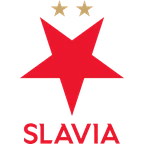

Ньюкасл — Арсенал прогноз на матч 21 ноября
Расчёт модели
- 0,8 : 1,6ожидаемые голы
- 44 %тотал больше 2,5
- 45 %обе забьют
Цифры считает модель по данным сайта, а не эксперт. Это вероятности, а не гарантия исхода. Как считает модель · словарь терминов.
- ТурнирАПЛ
Коротко о матче
Главное перед игрой — серия: Арсенал — 4 победы подряд. По форме разница заметная: в пяти последних матчах Арсенал — 4 победы, Ньюкасл — 1 победа. По голам за эти пять матчей: Ньюкасл — в среднем 0,8 забито и 1,4 пропущено, Арсенал — 1,6 и 0,6.
Стоит учесть и площадку: дома Ньюкасл — 1 победа в 5 матчах, на выезде Арсенал — 6 побед в 8. В последний раз команды встречались 25 апреля 2026 года: Арсенал — Ньюкасл 1:0.
По расчёту модели фаворит — Арсенал: 57 % на победу. Это оценка по данным, а не обещание исхода.
Форма: последние матчи
 Ньюкасл 1 победа из 5
Ньюкасл 1 победа из 5
 П1:4
П1:4 П0:1
П0:1 В2:0
В2:0 П0:1
П0:1 Н1:1
Н1:1
 Арсенал 4 победы из 5
Арсенал 4 победы из 5
 Н2:2
Н2:2- В2:0
 В1:0
В1:0
В2:1- В1:0
Личные встречи
- Арсенал1:0Ньюкасл
- Ньюкасл1:2Арсенал
Положение в таблице
| Команда | Место | И | В | Н | П | Голы | Очки |
|---|---|---|---|---|---|---|---|
| 12 | 10 | 3 | 3 | 4 | 13:16 | 12 | |
| 1 | 10 | 9 | 0 | 1 | 15:5 | 27 |
Куда дальше
Материалы носят информационный характер и не гарантируют результат. Реклама букмекеров на сайте не размещается. Сайт только для совершеннолетних (18+).